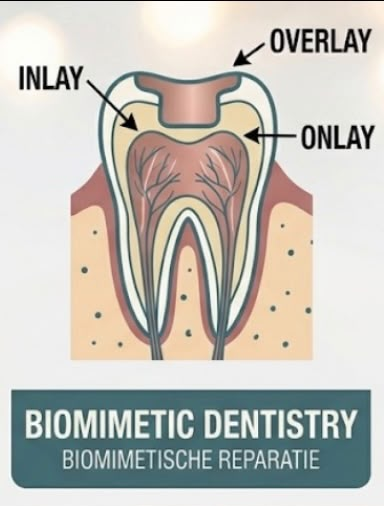
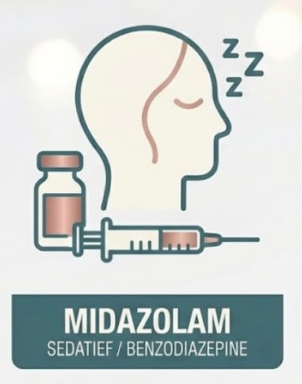
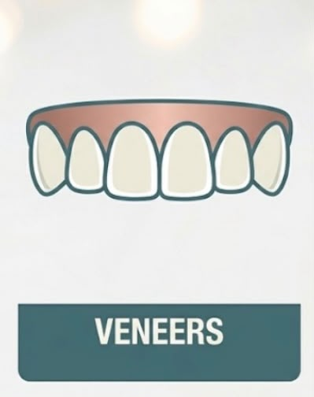

Welkom bij Tandzorg Tamimi. Mijn naam is Fatima Altamimi, zelfstandig tandarts ZZP werkzaam in Noord-Holland. Ik bied hoogwaardige reguliere tandheelkundige zorg met aandacht voor iedere patiënt.
Neem contact opIk ben Fatima Altamimi, afgestudeerd tandarts aan het Academisch Centrum Tandheelkunde Amsterdam (ACTA) in 2023.
Tijdens mijn opleiding en werkervaring heb ik een brede interesse ontwikkeld binnen de algemene tandheelkunde. Mijn behandelvisie is gebaseerd op wetenschappelijke kennis, moderne technieken en persoonlijke aandacht.
Ik ben werkzaam in Noord-Holland en bied tandheelkundige zorg voor patiënten van alle leeftijden. Daarnaast ben ik beschikbaar als zzp-tandarts voor tandartspraktijken die ondersteuning zoeken.
79933608002
12095177
91149878
Academisch Centrum Tandheelkunde Amsterdam (ACTA)
Uitgegeven door Vrije Universiteit Amsterdam, 2023
Academisch Centrum Tandheelkunde Amsterdam (ACTA)
Behaald certificaat voor veilig en verantwoord gebruik van röntgenapparatuur binnen de tandheelkundige praktijk.
Aangesloten bij de Koninklijke Nederlandse Maatschappij tot bevordering der Tandheelkunde (KNMT)
Via de KNMT ben ik aangesloten bij een klachten- en geschillenregeling voor patiënten.
Naast mijn opleiding tot tandarts heb ik mij verder ontwikkeld door middel van aanvullende cursussen en opleidingen.
Alleman Center of Biomimetic Dentistry
Verdieping in restauratieve tandheelkunde met focus op behoud en versterking van natuurlijke tandstructuren.

Academie voor Kindertandheelkunde
Aanvullende kennis rondom angstbegeleiding en sedatiemogelijkheden binnen de tandheelkundige zorg.

Binnenkort volg ik een cursus bij dr. Osama Shaalan gericht op directe composietveneers en minimaal invasieve hoogwaardige esthetisch-restauratieve behandelingen.

Bij Tandzorg Tamimi kunt u terecht voor diverse vormen van reguliere tandheelkundige zorg.
Regelmatige controles om uw mondgezondheid te beoordelen en problemen vroegtijdig te signaleren.
Begeleiding en advies gericht op het behouden van een gezonde mond.
Herstel van beschadigde of aangetaste tanden met aandacht voor functie en duurzaamheid.
Behandeling van problemen aan het wortelkanaal met als doel het behouden van tanden.
Persoonlijke begeleiding en behandeling voor jonge patiënten.
Behandelingen gericht op het verbeteren van het uiterlijk van het gebit, afgestemd op uw wensen.
Beoordeling en behandeling van acute tandheelkundige klachten.
Een rustige en persoonlijke aanpak voor patiënten die spanning ervaren rondom tandheelkundige behandelingen.
Bent u op zoek naar een betrokken en professionele ZZP-tandarts voor tijdelijke ondersteuning binnen uw praktijk?
Tandzorg Tamimi is beschikbaar voor:
Met aandacht voor patiëntgerichte zorg, kwaliteit en een prettige samenwerking binnen het behandelteam sluit ik mij flexibel aan bij verschillende tandartspraktijken.
Heeft u een vraag over een behandeling, wilt u meer informatie of wilt u contact opnemen voor samenwerking?
Vul het formulier in en ik neem zo snel mogelijk contact met u op.
Tandzorg Tamimi vindt de bescherming van uw persoonsgegevens belangrijk. Wij gaan zorgvuldig en vertrouwelijk om met de informatie die u met ons deelt.
In deze privacy- en cookieverklaring leggen wij uit welke persoonsgegevens wij verwerken, waarom wij deze gegevens gebruiken en welke rechten u heeft volgens de Algemene Verordening Gegevensbescherming (AVG).
Wanneer u contact opneemt met Tandzorg Tamimi of gebruikmaakt van tandheelkundige zorg, kunnen wij persoonsgegevens verwerken.
Gezondheidsgegevens worden uitsluitend verwerkt wanneer dit noodzakelijk is voor het leveren van tandheelkundige zorg.
Via deze website kunt u gebruikmaken van een contactformulier. De gegevens die u invult worden gebruikt om uw bericht te beantwoorden.
Voor het verwerken van formulierinzendingen maken wij gebruik van Formspree. Uw gegevens worden verwerkt volgens de privacyvoorwaarden van deze dienst.
Wij bewaren persoonsgegevens niet langer dan noodzakelijk is voor het doel waarvoor deze zijn verzameld.
Voor medische gegevens geldt de wettelijke bewaartermijn volgens de Wet op de geneeskundige behandelovereenkomst (WGBO).
Tandzorg Tamimi deelt persoonsgegevens alleen wanneer dit noodzakelijk is voor de behandeling, wanneer u toestemming heeft gegeven of wanneer dit wettelijk verplicht is.
Wij nemen passende maatregelen om uw persoonsgegevens te beschermen tegen verlies, misbruik of onbevoegde toegang.
De website van Tandzorg Tamimi gebruikt momenteel geen cookies voor advertentie- of marketingdoeleinden.
Wanneer in de toekomst gebruik wordt gemaakt van aanvullende diensten zoals analyse- of marketingtools, wordt deze privacy- en cookieverklaring aangepast.
U heeft volgens de AVG het recht om uw persoonsgegevens in te zien, te laten corrigeren of te laten verwijderen wanneer dit wettelijk mogelijk is.
U kunt hiervoor contact opnemen via:
Wanneer u niet tevreden bent over de manier waarop wij met uw gegevens omgaan, kunt u contact met ons opnemen. U heeft ook het recht om een klacht in te dienen bij de Autoriteit Persoonsgegevens.
Tandzorg Tamimi
Fatima Altamimi, tandarts ZZP
Werkzaam in regio Noord-Holland
BIG-registratie: 79933608002
KVK-nummer: 91149878
AGB-code: 12095177
KNMT-lid
E-mail: tandzorgtamimi@hotmail.com
Laatste wijziging: 2026